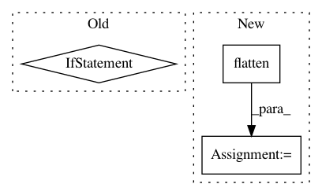

1775e89f262111791fabfd40f80a24f74738fe54,rllib/models/tf/tf_action_dist.py,MultiActionDistribution,logp,#MultiActionDistribution#Any#,371
Before Change
split_list = tf.split(x, split_indices, axis=1)
for i, distribution in enumerate(self.child_distributions):
// Remove extra categorical dimension
if isinstance(distribution, Categorical):
split_list[i] = tf.cast(
tf.squeeze(split_list[i], axis=-1), tf.int32)
log_list = [
distribution.logp(split_x) for distribution, split_x in zip(
self.child_distributions, split_list)
]
After Change
split_x = tf.split(x, split_indices, axis=1)
// Structured or flattened (by single action component) input.
else:
split_x = tree.flatten(x)
def map_(val, dist):
// Remove extra categorical dimension.
if isinstance(dist, Categorical):
In pattern: SUPERPATTERN
Frequency: 3
Non-data size: 3
Instances
Project Name: ray-project/ray
Commit Name: 1775e89f262111791fabfd40f80a24f74738fe54
Time: 2020-04-28
Author: sven@anyscale.io
File Name: rllib/models/tf/tf_action_dist.py
Class Name: MultiActionDistribution
Method Name: logp
Project Name: asyml/texar
Commit Name: af461df627ef660d1a71b6981dedb4e4b504ba9a
Time: 2017-09-25
Author: junxianh2@gmail.com
File Name: txtgen/modules/connectors/connectors.py
Class Name: StochasticConnector
Method Name: _build
Project Name: asyml/texar
Commit Name: 47c71c0524c7804863f2f4bcffdef5a873d84a55
Time: 2017-10-16
Author: junxianh2@gmail.com
File Name: txtgen/modules/connectors/connectors.py
Class Name:
Method Name: _mlp_transform